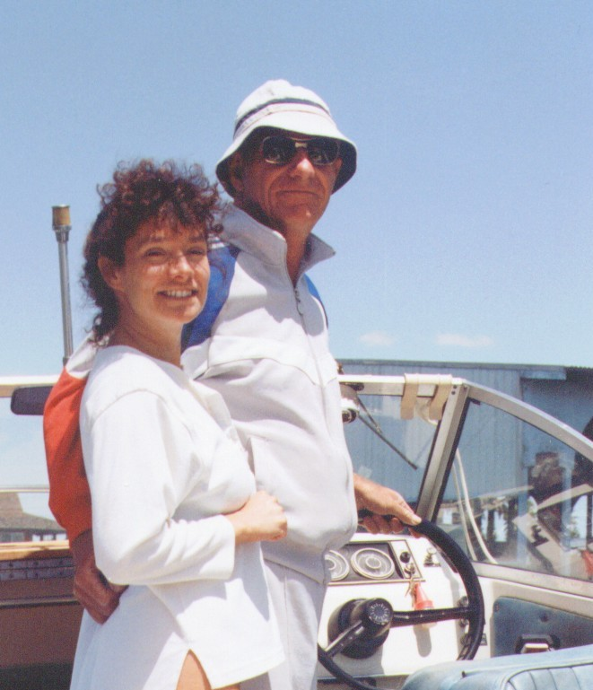

|
So what about this man, Herb Bowie? Certainly he was a decent person.
No racial prejudice, no disregard for others, and certainly did seem to have a regard for the quality of his own work,
and accomplishments. But, to me, one of his own sons, he was somewhat of an enigma.
I was 5 years old when my Mom and Dad were divorced. After that my Mom, my brother and I moved from
Northern Virginia to Annapolis Maryland.
My brother and I saw Dad every other weekend for several years thereafter,
but then he moved to the west coast (Seattle) following his career, taking a new position with Boeing.
After this I saw him maybe once a year. Moreover, I was never as close to my Dad as to others of my family.
I could call my brother on the phone, and we'd talk for the longest time.
But conversation with Dad was sometimes strained, and was typically not the same.
Of all the things he knew about auto mechanics, and mechanical things; he never shared any of it with me...
He did however teach, or at least try to teach, my brother and I a few things about boating.
And, he taught me how to row a boat; a skill that I've retained and an activity which I enjoy although I rarely get the opportunity to do it.
I remember visiting my Dad In Seattle during summer vacation one year.
Ordinarily my brother Herb and I were together on such trips, but for whatever reason
I had gone by myself on this one. Herb may have been away at college or perhaps had
a summer job, I don't recall.
At any rate I was a young teen, and I remember the trip being somewhat lonely
and boring as my Dad was working on the week days, I had no friends,
and there were no kids my age in the area. My stepmom, Kitty, was there, but she
spent her leisure time watching soap operas on TV which I had no interest in whatsoever.
Well, during this vacation my Dad and Kitty had some friends over for dinner one evening,
a couple (husband and wife) as I recall. My Dad and Kitty, of course, were
nudists and so, apparently, were the couple that were visiting.
I, however, had no clue about this at the time and no preparation for what was about to come...
We were all having appetizers on the deck when my Dad got up and went into
his bedroom door which adjoined the deck. Next thing I know he appears in
the doorway buck naked! He laughs and makes some comment about, "Oh, are
we supposed to wear clothes...?" or something. I was shocked, in total disbelief.
I remember thinking to myself "I didn't just see my father standing naked
in front of these people that I don't even know..." I don't think I said
a word. I probably just sat there with my mouth open. At some point
after that Dad explained that He and Kitty were nudists. It was a hell of an
indoctrination.
I guess that's a lesson in my dad's sense of humor, and lack of sensitivity.
|
| |
|

|
|
Herb & daughter in law, Liz (Ken's wife)
|
|
|
Dad got off the wheel...out of the race. He was financially independent later in life.
He had apparently managed his money well, and had enough income through
various investments (primarily real estate) that he did not have to work.
I must say I did admire my Dad, particularly for his versatility, his ability
to adapt and learn new things. After a fairly long and successful career as
an aviation engineer he shifted gears totally. I'm not sure, but I think
Boeing was kind of winding down at the time and although Dad had not been
laid off he wasn't being challenged and perhaps not being given the work
or assignments that he would ordinarily have had. At any rate, he
chose to become involved in an entirely new career relatively late in life.
He took courses in Real Estate, eventually leaving Boeing. He became a realtor and real estate
appraiser. And, he was very successful at this.
What else can I say? He was an interesting character. I finally came to
appreciate my relationship with him. We had arrived. I didn't see him often,
and certainly we weren't involved in each others lives on a consistent or
frequent basis. But, he was always there, in the background.
And I'd see him again after a time, and we'd get
reacquainted, laugh, and enjoy each other. It seemed so strange, and so
sad after his death to think that he'd no longer be there, and I would
see him no more.
With Love for my father - my Dad,
|